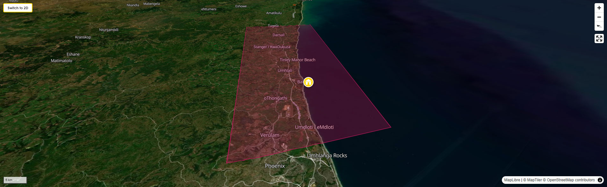

BackpackersBible.com
KwaZulu-Natal North Coast

The first thing that strikes you, driving north from Durban's King Shaka International Airport, is the ocean to your right and the cane to your left. The Indian Ocean — which here is actually warm, blue, and swimming-possible, unlike the Atlantic at Cape Town — runs along the coast in a continuous glitter. And inland from it, stretching west to the horizon, the sugarcane. Miles and miles of it: tall, feathery, rustling, turning gold in the dry months and then being burned in great walls of fire when the harvest comes, the smoke visible from the beaches, the smell of something sweetly industrial in the air. This is sugarcane country, and it was the sugarcane that made everything else about this strip of coast what it is today.
The stretch of KwaZulu-Natal coastline from just north of Durban to the Tugela River — officially the KwaDukuza Local Municipality, colloquially the North Coast, romantically the Dolphin Coast — is not on most backpacker itineraries and that is a genuine pity. It has warm-water beaches without Cape Town's crowds or prices, a history that is unlike anything else in the country, a food culture built around the most interesting community in South Africa, and one or two natural spectacles that are genuinely world-class and almost entirely unknown outside the region. It is also, for what it's worth, the most convenient first or last night of a KwaZulu-Natal trip if you are flying through King Shaka: 30 minutes from the terminal to the beach.
But go further than the convenience. This is a place that will rearrange your understanding of what South Africa is and where it came from, and do it while you are eating the best curry of your life on a warm evening with the Indian Ocean a hundred metres away. That is a combination that is very difficult to beat.
The North Coast is subtropical in climate — hot, humid summers with afternoon thunderstorms, mild winters with long stretches of sunshine and water warm enough to swim in year-round. It has none of the drama of Cape Town's mountain-and-sea geography; the landscape here is gentle, rolling, domestic. The hills are covered in cane, the valleys run down to small river mouths and tidal lagoons, the coastal towns are relaxed in a way that Durban, 40 minutes south, is emphatically not. Ballito is the commercial centre — a fast-growing beach town with good restaurants, good surf, and the slightly bewildering energy of a place that has doubled in size in ten years and is still figuring out what it wants to be. Salt Rock, Shaka's Rock, Sheffield Beach, Tinley Manor, Zinkwazi — these are quieter, smaller, each with its own tidal pool and its own stretch of the warm Indian Ocean, reached by the M4 coastal road that runs behind the dunes all the way north to the Tugela.
What gives the North Coast its specific character — the thing that makes it genuinely unlike anywhere else in South Africa — is its people. This is the heartland of South Africa's Indian community, one of the most remarkable and least-known immigrant success stories in the world. Understanding how they came here, and what they built, turns a pleasant beach holiday into something considerably more interesting.
Sugar was first grown commercially in Natal in the 1840s. The colony's white settlers had discovered that the coastal soil and climate were ideal for the crop, and within a decade the industry was expanding rapidly along the narrow coastal belt. There was only one problem: labour.
The Zulu people — whose kingdom occupied the broader region — were not interested in working as cane cutters. This was not laziness or incapacity; it was a considered cultural position. In traditional Zulu society, agricultural field work was women's work. For a Zulu man to cut cane alongside women for wages set by a European employer was not merely underpaid — it was socially incomprehensible, a category violation that offended the entire structure of how masculine identity and honour were understood. Historians describe it more formally: Zulu men had access to land, were embedded in a pastoral economy organised around cattle, and had no economic or cultural incentive to enter wage labour "on conditions set by others," in the words of one academic account. Whatever one makes of the colonial frustration this produced, the Zulu refusal had a logic that was entirely coherent on its own terms — and the descendants of those same workers are today some of the wealthiest landowners in KwaZulu-Natal.
The colonial planters turned to the British imperial system of indentured labour — a practice of binding workers to multi-year contracts, developed after the abolition of slavery in 1833 as a way of maintaining plantation production across the Empire. The system had already been operating in Mauritius since 1834, where it had proven, from the planters' perspective at least, highly effective. Mauritius's experience was the template: an island sugar economy that had successfully transitioned from enslaved to contract labour using workers recruited from British India. When Natal's planters lobbied London for permission to do the same, the authorities pointed to Mauritius and approved it.
The first ship, the Truro, arrived in Durban harbour on 16 November 1860. It carried 342 indentured workers from Madras (now Chennai), in southern India. They had signed five-year contracts — what they called the girmit, a Hindustani pronunciation of the English word "agreement" — in exchange for free passage, food, accommodation, medical care, and ten shillings a month, with annual increments of one shilling thereafter. Over the following 51 years, 384 ships would make the same journey, carrying a total of 152,184 souls. More than two-thirds came from southern India; the rest from the north. Most were Hindu; a significant minority were Muslim; a small number were Christian. Most were from low-caste rural agricultural communities who had little to lose and very little to return to. Over time, a second wave of voluntary migrants — known as "passenger Indians" — followed, arriving under their own steam, typically to trade. It is from this passenger class that the Indian merchant and professional community of South Africa primarily descends.
The conditions of indenture were brutal by any honest assessment. Workers were bound by penal contract — absences, refusals to work, and complaints were treated as criminal offences. The basic wage of ten shillings a month did not change across the entire 51-year period of indenture. Workers who completed their contracts were offered the choice of a free return passage to India, a grant of land in Natal equivalent in value to that passage, or a third period of indenture at higher wages. Many chose the land. It was from these land grants — small plots, often marginal — that the South African Indian community began its slow and remarkable ascent.
In 1911, India banned further emigration to Natal, citing the documented mistreatment of its citizens in the colony. The indenture system was over, but the community it had created was permanent. The roughly 150,000 people and their descendants who had come through that system were here, in KwaZulu-Natal, with no realistic prospect of return and every incentive to build something in the country that had brought them.
The story of what South Africa's Indian community built from the wreckage of indenture is one of the most extraordinary stories in the country — and one of the least told in the histories that reach European readers. The descendants of people who arrived with nothing, bound by legal contracts they could not read, in a country they had never heard of, went on to become some of the most educationally accomplished, economically successful, and politically significant communities in South African history.
The obstacles were formidable. The colonial government imposed a £3 annual tax on any Indian who had completed their indenture and chose not to re-indenture or return to India — a punitive measure designed to push them out of the colony. Land ownership was restricted. From the 1890s onward, a series of discriminatory laws progressively limited Indian rights to property, business, and political participation. The apartheid system, when it came in 1948, imposed the full set of racial classifications on a community that had been in South Africa for nearly a century.
None of it worked as intended. The community educated its children, formed organisations, ran businesses in the spaces permitted to them, and produced lawyers, doctors, academics, and eventually politicians in numbers that vastly exceeded their proportion of the population. The Indian community of South Africa today — approximately 1.4 million people, concentrated in KwaZulu-Natal and the western suburbs of Johannesburg — is among the most educationally qualified and professionally represented ethnic groups in the country. The medical, legal, and business professions in KZN have Indian South Africans throughout their upper ranks. The food culture they brought and adapted — a fusion of southern Indian, northern Indian, Muslim, and specifically Natal-local culinary influences — produced what is now considered the most distinctive regional cuisine in the country. More on this in the FAQs and Things to Do sections.
Mohandas Karamchand Gandhi arrived in Durban in May 1893, aged 24, on a year's legal assignment for an Indian trading house. He intended to stay twelve months. He stayed twenty-one years. It was on the North Coast, on a farm outside Durban in the community now known as Phoenix, that Gandhi underwent the most important transformation of his life — from a successful Westernised lawyer to the architect of a philosophy of nonviolent resistance that would change the world.
The trigger for that transformation was almost immediate. On his first train journey in South Africa, Gandhi was removed from a first-class compartment at Pietermaritzburg station and thrown off the train for refusing to move to the third-class carriage reserved for non-white passengers, despite holding a valid first-class ticket. He spent the night on the station platform in the winter cold, and spent the next twenty years deciding what to do about it.
He began by organising: founding the Natal Indian Congress in 1894, fighting the £3 poll tax, representing indentured workers in legal disputes against their employers, and launching Indian Opinion, a newspaper published in English, Tamil, Hindi, and Gujarati from 1903 onward. In 1904, reading John Ruskin's Unto This Last on a 24-hour train journey, he had what he later described as a life-changing revelation about the value of manual labour and communal living. He bought 100 acres of land near the station of Phoenix, 25 kilometres north of Durban, and founded there a community based on self-sufficiency, the dignity of physical work, and resistance to injustice through means that did not replicate the violence of the thing being resisted.
It was at the Phoenix Settlement that Gandhi developed and refined what he called satyagraha — literally "truth-force" or "soul-force" — the philosophy of active, nonviolent resistance to injustice that he later deployed in India and that Martin Luther King Jr. would study and adapt for the American civil rights movement. The Settlement was a printing press, a farm, a community, and a laboratory for ideas that would eventually help end two colonial empires. Gandhi left South Africa in 1914, never to return. His son Manilal continued to live at Phoenix Settlement for decades afterward. The Settlement was declared a National Heritage Site in 2020. It is open to visitors, free of charge, 25 minutes' drive from King Shaka Airport. It is one of the most historically significant places on the African continent, and most people driving past on the N2 have no idea it is there.
Before the sugar, before the indentured workers, before the British colony, this coast belonged to the Zulu kingdom — and its traces are everywhere, in the place names, in the landscape, and in the specific piece of history buried in the inland town of KwaDukuza (formerly called Stanger by its colonial administrators, a name the locals largely ignore).
Shaka kaSenzangakhona — known simply as Shaka — was arguably the most consequential military and political figure in sub-Saharan African history. Born around 1787, he rose from the illegitimate, bullied son of a minor chief to become the founder and absolute ruler of the Zulu Kingdom, transforming a small clan into the dominant military power of the region through tactical innovations that reshaped how war was fought on the subcontinent. His regiments, organised by age-grade rather than clan affiliation, carried short stabbing spears called iklwa (named, reportedly, for the sucking sound they made when withdrawn from a body) and large cowhide shields, and operated in a characteristic encircling formation — the "bull horn" — that delivered devastating psychological and physical shock to opponents accustomed to long-range skirmishing. He was assassinated by his half-brothers in 1828, at his royal kraal in what is now KwaDukuza, and buried on the site. You can visit his grave today.
The North Coast carries Shaka's name in its very geography. Shaka's Rock — the small village between Ballito and Salt Rock — takes its name from a rocky promontory that local tradition records as having multiple uses by the king: as a lookout post from which he scanned the coastline and the sea, and, in the darker version of the legend, as a place from which he tested his warriors' courage by daring them to jump, and from which he is said to have thrown enemies to their deaths. The promontory is still there, above the tidal pool. On a clear day it commands exactly the kind of view that a militarily-minded chief surveying his coastal territory would have valued. Whether the darker stories are literally true is historically uncertain; that Shaka's presence shaped this landscape is not.
Salt Rock, just north, gets its name from a different royal connection: this was where the maidens of the Zulu royal household came to harvest salt from the coastal rocks — a commodity of enormous value in a pre-industrial economy — for Shaka's household and his armies. The image of royal women working the coastal rocks for salt is very North Coast: the sea as supplier, the kingdom as consumer, the women doing the work that the men's culture forbade them to be seen doing in the cane fields.
And then there is Albert Luthuli, buried near KwaDukuza, whose legacy the North Coast carries alongside Shaka's with equal if less well-publicised pride. Chief Albert Luthuli — the Zulu chief and ANC president who won the Nobel Peace Prize in 1960, the first African to do so — lived at Groutville, just inland from the coast, and is buried there. His museum is 20 minutes from Ballito. The man who accepted the Nobel Peace Prize while under banning order from the apartheid government, who was prohibited from making public speeches in his own country, who described nonviolent resistance to apartheid in a Nobel lecture that was read on his behalf in Oslo — buried within sight of the Indian Ocean, in the middle of sugarcane country. The North Coast contains multitudes.
The "Dolphin Coast" nickname is not marketing fiction. The warm Agulhas Current that flows north along this coastline draws hundreds of bottlenose dolphins into the near-shore waters year-round, and they are frequently visible from the beach, surfing the waves just beyond the breakers, often close enough to make out individual animals. In the whale-watching season (June to November), humpback and southern right whales transit offshore, sometimes close enough to see from the clifftops above the tidal pools. The sardine run — one of the great wildlife spectacles on earth, an annual northward migration of billions of sardines from the cold Cape waters up the KZN coast, pursued by sharks, dolphins, game fish, and gannets dive-bombing from above — takes place between approximately May and July each year, and the North Coast beaches are among the better positions from which to witness it when conditions align. None of this costs a cent. The Indian Ocean is warm, the dolphins are regular, and the sardine run, when it comes, is the kind of thing you photograph and then realise no photograph will ever convey.
The North Coast is an all-year destination by the standards of anywhere in the northern hemisphere — the average temperature is above 20°C in every month. That said, the seasons are meaningfully different.
Summer (November–March) is hot, very humid, and punctuated by afternoon thunderstorms that typically arrive fast, dump spectacular quantities of rain, and then clear within an hour. The ocean is at its warmest and the beaches are alive — this is peak South African domestic holiday season, and from mid-December to mid-January the North Coast is full of KwaZulu-Natal families doing exactly what families do at the beach. Prices rise accordingly. If you are coming to surf, swim, and be among a crowd, this is your season. The Mount Moreland swallow roost (see above, and the Things to Do section) is active from October through April.
Winter (June–August) is drier, less humid, and cooler — days typically 22–25°C, nights dropping to around 15°C, which requires a light layer. The sea is slightly cooler but still perfectly swimmable. Crowds are minimal, prices are low, and the coast returns to something closer to its natural character. The sardine run happens during this window (typically June–July), and the whale-watching season is well underway. For travellers who want the beach without the school-holiday crowd, winter is excellent.
The sweet spot for most backpackers is September–November or March–May: warm, increasingly dry, the ocean still swimmable at comfortable temperatures, and the domestic holiday crowd either not yet arrived or just departed.
Because someone in a tourism office in the early 1990s decided that "Dolphin Coast" was more marketable than "North Coast," and they were not entirely wrong. The bottlenose dolphins that frequent the near-shore waters here are genuinely abundant and genuinely visible from the beach. The name stuck in tourism materials and on road signs. The locals — people who live here, people who grew up here — still mostly say "the north coast." Expect both; understand they mean the same thing.
The village takes its name from a rocky promontory above the beach associated with the Zulu king Shaka (reigned 1816–1828). Local tradition holds that Shaka used the rock as a lookout point from which to survey the coastline and the ocean. A parallel tradition — darker, and historically unverifiable — holds that he tested his warriors' courage by challenging them to jump from it, and that enemies were thrown from it to their deaths below. Whether or not the specific legends are literally accurate, the promontory is real, the view from it is commanding, and Shaka's presence in this landscape is historical fact. His grave, his royal kraal, and the site of his assassination are all within 20 kilometres, at KwaDukuza. The rock above the tidal pool at Shaka's Rock Beach — you can stand on it — does exactly what a military lookout post should do: it shows you the ocean, both directions of coast, and everything approaching from the sea.
From everywhere, is the honest answer — the density of excellent Indian food on the North Coast is so high that even a petrol station forecourt is likely to offer a credible bunny chow. But there are things you specifically need to try, in order.
Bunny chow is the essential Durban-Indian dish: a hollowed-out quarter loaf of white bread filled with curry — originally bean curry, but now available with mutton, chicken, prawn, and various vegetarian fillings — the bread lid balanced on top. The "bunny" has nothing to do with rabbits; the name comes from "bania," the caste name of many of the early Indian traders who sold the dish from their shops. The combination of bread and curry may sound simple and is in fact extraordinary: the bread soaks up the sauce, the curry keeps the bread from becoming heavy, and the whole thing is eaten with your hands, with no utensils, with no dignity, and with complete happiness. Cost: R40–R80. Available: everywhere. Best eaten: standing at the counter of a takeaway on the R102, with the windows open and something soulful playing from the kitchen.
Durban curry is not like any other curry you have eaten. The Natal Indian community developed their own culinary tradition over 160 years — drawing on southern and northern Indian regional cooking, adapting to local spices and local ingredients, absorbing influences from the Zulu, Malay, and Cape cooking traditions that surrounded them — and the result is something that is specifically Natal: hotter than you think, complex in a way that reveals itself over the meal rather than on the first bite, finished with fresh coriander and sometimes with banana or tamarind in ways that would surprise a chef in Chennai. The prawn curry of the North Coast is an exceptional thing in its own right — the Indian Ocean provides the prawns, the Natal Indian community provides the recipe, and the result is one of the great combinations in South African food.
Roti, samoosas, koeksisters (the Afrikaner version — sweet, plaited, syrup-soaked — not the Cape Malay version), mithai (Indian sweets), and achaar (pickled mango, fiery, addictive, eaten with everything) are all part of the foodscape and should all be tried. The community markets that operate throughout the North Coast — informal, often roadside, often in the back of a car boot — are the best places to find achaar and spice mixes made to family recipes that exist nowhere else.
Yes, and this is genuinely one of the best places in South Africa to do so. The Agulhas Current keeps the Indian Ocean here at 21–26°C year-round — warm enough to swim comfortably in winter without a wetsuit, warm enough in summer to feel like a bath. The beaches are generally protected by shark nets — the Natal Sharks Board maintains nets along the KZN coast and has been doing so since 1952, giving this stretch of coastline an excellent shark-incident safety record. Swim within the flagged areas, observe the lifeguard warnings (the red-and-yellow flags), and check whether the beach you are at has lifeguards on duty — the larger beaches at Ballito, Salt Rock, and Zinkwazi do; some of the smaller ones do not.
The tidal pools at Shaka's Rock, Salt Rock, and Sheffield Beach are particularly good for snorkelling — calm, clear, protected from the waves, and full of sea life that is visible without equipment to anyone who looks.
Sugarcane is burned before harvest to remove the dry outer leaves that cannot be processed and to drive out snakes and insects from the dense cane. The burning happens year-round but is most concentrated in the winter and early spring dry season. You will see the fires from the beach — a wall of flame moving slowly through a field, followed by columns of black-grey smoke — and the ash falls for miles. The effect on air quality in the immediate vicinity is real, though rarely prolonged; the coast usually has enough onshore breeze to push the smoke inland quickly. It is not a health crisis for most visitors. It is, however, one of the most dramatic visual features of the North Coast landscape, and the sight of cane burning at night — the orange light, the shadows of the stalks, the crackle audible from the road — is one of those specifically KZN experiences that belongs nowhere else.
For the North Coast, yes — a car makes an enormous difference. The towns are connected by the N2 freeway and the older coastal M4, and the distances between them are not large (Ballito to KwaDukuza is 18km, KwaDukuza to Zinkwazi is another 15km), but public transport is not visitor-accessible in the way that Cape Town's MyCiTi system is. Uber is functional between the larger towns, but the smaller beaches and inland sites are effectively car-only. Pick up at King Shaka Airport (all major companies have desks in the terminal), drive on the left, and note that the N2 toll road charges apply northbound — have cash or a card for the toll plazas. The M4 coastal road is toll-free and, more importantly, slower and more scenic; take it when you are not in a hurry and stop at every tidal pool you pass.
The Sardine Run is an annual mass migration of billions of Cape Pilgrim Sardines from their cold-water feeding grounds in the Cape up the east coast of South Africa to KwaZulu-Natal, driven by a cold-water current that pushes inshore between May and July. The sardines migrate in "bait balls" — densely packed shoals of millions of fish — that are pursued by bronze whaler sharks in their hundreds, common dolphins in their thousands, gannets dive-bombing from above, and game fish striking from below. When a bait ball reaches the surface near a beach, the sea turns black with fish, the birds are manic overhead, the dolphins are working systematically, and the sharks are circling the perimeter. It is one of the great wildlife spectacles on earth.
The caveat: it is entirely unpredictable. The run does not happen on a schedule. It happens when the oceanographic conditions align — a cold inshore current, the right water temperature differential — and some years it is spectacular on the North Coast, some years it barely reaches KZN at all. It has also been affected by over-fishing and climate change. If you are here in June or July, watch the local social media groups (North Coast fishing and diving communities are the best early warning systems), listen to what the charter boats are saying, and if reports come of a run, get to a beach or onto a boat immediately. It will not wait. But if you see it, you will talk about it for the rest of your life.
The Phoenix Settlement is approximately 25km north of central Durban, in the community of Phoenix-Inanda. It is not on the North Coast proper — it is inland, in a peri-urban area that requires a degree of navigational care. The easiest approach is by hire car from King Shaka Airport (20–25 minutes) following the R102/M25 via Inanda, following the brown heritage signs once you reach the Phoenix area. The entrance to the settlement is at the top of the road — do not stop at the information sign on the way up; drive to the top. Entry is free. Phone ahead to arrange a visit: the settlement is not always staffed, and booking in advance ensures you will have a guide. The printing press where Gandhi's Indian Opinion was set by hand is still there. So is the reconstruction of his cottage, Sarvodaya. So is a remarkable quietness, given what happened here and what it produced. Allow two hours and go with some knowledge of Gandhi's South African years; the site rewards those who know what they are looking at.
A note on the surrounding area: the Phoenix-Inanda community has experienced significant communal tensions in recent years, most notably during the 2021 KwaZulu-Natal riots following Jacob Zuma's imprisonment. The settlement itself is a national heritage site and is not a risk destination. But navigate to it and from it directly, do not wander the surrounding streets, and go during daylight hours.
The only organisation of its kind in the world. The Natal Sharks Board has been maintaining a system of shark exclusion nets along the KwaZulu-Natal coastline since 1952 — a network of approximately 37km of nets protecting 37 beaches, including all the major swimming beaches on the North Coast. The nets do not completely surround the beaches (they are open at the top and bottom); they work by reducing shark population density in the near-shore zone through entanglement. The Board monitors the nets daily, releases live non-target species, and maintains the infrastructure that gives KZN one of the best shark-incident records in the world for a warm-water surf coast. Their Umhlanga headquarters runs public shark dissection and educational presentations on weekday mornings — the chance to see up close what actually swims offshore, and to understand how the protection system works, is one of the stranger and more educational mornings available on this stretch of coast.
The North Coast is, by South African standards, a relatively safe tourist destination — and that relative safety is genuine, not a marketing euphemism. The resort towns of Ballito, Salt Rock, and Shaka's Rock are among the safer areas in KwaZulu-Natal for visitors, with active private security presence, good tourist infrastructure, and a crime profile that is significantly lower than Durban, Johannesburg, or the province's township areas. The comparison with the country as a whole requires the usual calibration: "safe by South African standards" is not the same as "safe by Dutch standards." The same basic habits that apply across the country apply here. Apply them and you will almost certainly have a trouble-free visit.
Ballito, Salt Rock, Shaka's Rock, Zinkwazi, and the other resort villages operate with a combination of municipal and private security that keeps the tourist-facing areas well-patrolled during the day. These are functioning holiday destinations where large numbers of South African families bring their children every school holiday; the ambient security reflects that. Walk the beachfronts freely during daylight. The tidal pools, the beaches, and the main commercial strips are safe to move around in standard-awareness mode during the day.
After dark: apply the same rule that applies everywhere in KwaZulu-Natal. Use Uber between venues rather than walking unfamiliar streets at night. The resort centres are quieter after dark than they appear during the day, and a quiet street in an unfamiliar place at night is a quiet street — keep that in mind.
Phone theft and bag snatching at beaches is an opportunistic crime that happens on every coastal tourism strip in the world. On the North Coast, as anywhere: keep valuables not in use locked in your car or in your accommodation, not lying on the sand while you swim. Do not leave bags unattended. Use your phone with awareness of who is around you and what is behind you. These are habits you should have anyway; the North Coast is not a high-risk environment for this, but complacency is its own risk.
The tourist towns of the North Coast are enclaves of relatively managed security within a broader region that is significantly more mixed in its safety profile. The inland areas — including parts of KwaDukuza/Stanger town and the townships to the west of the N2 — operate in a different environment from Ballito or Salt Rock. The historical and cultural sites inland (Shaka's memorial at KwaDukuza, the Luthuli Museum at Groutville, the Harold Johnson Nature Reserve) are worthwhile and are generally safe to visit during business hours with standard precautions. Do not wander off the specific sites into surrounding areas without local guidance.
The Phoenix and Inanda area, where Gandhi's Settlement is located, experienced communal violence during the July 2021 riots and has an elevated-tension history between its Indian and Zulu communities. Visit the Settlement on a planned visit, during daylight, navigate directly to and from it, and treat the surrounding areas as you would any unfamiliar peri-urban zone in KwaZulu-Natal — with awareness and directness of purpose rather than casual exploration.
The N2 toll road is well-maintained, well-lit, and generally safe to drive on in daylight and with standard awareness at night. The M4 coastal road is slower, prettier, and entirely fine during the day, but it is mostly single-lane and has very narrow shoulders. Avoid stopping on dark, unfamiliar roadsides. Keep your windows up and doors locked when stationary in slow-moving traffic or at traffic lights in areas you don't know — this applies to the Tongaat, Verulam, and KwaDukuza sections of the N2 more than to the beachside areas, but is a good general habit. Smash-and-grab theft from vehicles stopped at traffic lights is documented on the N2 corridor in the broader Durban metro area, less so on the resort sections of the North Coast proper.
When driving to or from King Shaka Airport: use the N2 as directed by Google Maps, ignoring any suggested shortcuts through unfamiliar township areas, particularly at night. The Tongaat-Verulam interchange area of the N2 is the section that warrants the most awareness; drive through it with windows up and proceed directly.
South Africa has sharks, and KwaZulu-Natal has warm-water sharks that include bull sharks, tiger sharks, and the occasional great white in the cooler months. The Natal Sharks Board's net system, operating since 1952, makes the protected beaches here among the safest shark-incident beaches in the world. Swim at netted beaches within the flagged zones. Observe the shark flag system: green means all clear, black-ball flag means water is closed for any reason including shark sightings. Do not swim at beaches without nets, particularly around river mouths, at dawn or dusk, or in murky water — these are the conditions in which shark encounters are most likely. The statistical risk of a shark incident on a netted North Coast beach is extremely low. The risk of complacency is higher; obey the flags.
You are going to spend most of your time in, on, or directly beside the Indian Ocean. This is not a question of preference — it is a question of geography. The water here is 21–26°C year-round, the shark net system has been running for over seventy years, and the beaches are some of the most consistently good swimming beaches on the African continent. The only question is what you do once you get there.
Swimming at the tidal pools (the smart choice):
The tidal pools along this stretch of coast — Shaka's Rock, Salt Rock's Granny's Pool, Thompson's Bay Rock Pool — are one of the North Coast's genuinely great pleasures. Formed naturally in the rock shelves that fringe the shoreline and expanded by decades of municipal maintenance, they are calm, shark-free, and full of sea life that is visible from the surface: klipfish, sea urchins, anemones, crabs, and sometimes the odd octopus wedged into a crevice. Granny's Pool at Salt Rock is the largest and most social, with a paved surround and a ladder into the water. Thompson's Bay Rock Pool, just south of Ballito's main Willard Beach, is smaller, quieter, and sits in a sheltered cove that collects the sort of golden light in the late afternoon that makes people reconsider their plans to leave the coast. Both are free. Both are family-friendly in the sense that they are entirely appropriate for adults who do not have families but simply want to spend a hot afternoon floating in warm, clear Indian Ocean water without worrying about anything.
Surf lessons at Ballito:
Ballito has a consistent, beach-break wave with a sandy bottom — genuinely good for beginners, more forgiving in the summer swell than in the bigger winter groundswells that produce the conditions for the annual Mr Price Pro surfing contest. Several operators along the beachfront run beginner lessons; a two-hour session with a board and a rash vest runs approximately R450–R600. The water is warm enough year-round that you do not need a wetsuit in summer and need only a thin 2mm shorty in the cooler months — a significant psychological advantage over Muizenberg's Atlantic-facing counterpart, where the Benguela Current will reset your body temperature within minutes. If you already surf, the stretch from Ballito north to Salt Rock has several reef and beach breaks that are worth exploring by board; ask at your hostel for current conditions and the breaks that suit your level.
Snorkelling at Sheffield Beach:
Sheffield Beach, a quiet resort between Salt Rock and Shaka's Rock, sits over a rocky reef that runs close to shore and is shallow enough to snorkel without a boat or a guide. In calm conditions — typically in the early morning before the sea breeze picks up — the visibility is 3–8 metres, and the reef is home to sergeant majors, spotted raggies (a smaller, reef-associated shark species entirely unbothered by snorkellers), and the periodic appearance of loggerhead turtles that nest along this coastline. Tidal Tao Snorkelling Safaris operates guided sessions from the North Coast that take beginners into deeper water with better access to reef systems. Cost approximately R500–R700. Alternatively, bring your own mask and spend a free morning at Sheffield on an incoming tide.
Watching the dolphins (no boat required):
The bottlenose dolphins that give the Dolphin Coast its name are not a seasonal attraction. They are here year-round, in pods that have been recorded at up to several hundred animals, and they work the surf break on a daily basis — riding the waves, bow-riding the swells, and occasionally surfing alongside the human surfers in a manner that suggests they find the comparison amusing. The best viewing points are the rocky headlands between Ballito and Salt Rock, particularly the bluff above Thompson's Bay, at any time in the early morning or late afternoon when the sea is relatively calm. You will not always see them — but you will see them more often than you think, from entirely free vantage points, and without a boat operator taking R800 from you to guarantee a sighting that the dolphins will deliver for nothing if you simply look at the right time.
The North Coast sits on some of the most historically loaded ground in southern Africa, and the majority of travellers drive past all of it on the N2 at 120km/h. This is a mistake.
The Luthuli Museum, Groutville:
Chief Albert John Mvumbi Luthuli — Nobel Peace Prize laureate, President-General of the African National Congress, and the first African to receive the Nobel Prize in any field — lived and died in Groutville, a small settlement just inland of the North Coast, under banning orders that confined him to this small area of KwaZulu-Natal for the last years of his life. The museum is in the actual house he occupied from 1927, preserved within a modern interpretative centre that tells the full arc of his extraordinary life: from school teacher and Zulu chief, to ANC leader, to the man who accepted the Nobel Peace Prize in Oslo in 1961 while prohibited by the South African government from leaving the district of Groutville. The exhibition includes photographs, newspaper clippings, and mementos of the apartheid era, laid out with a clarity that makes the political history of the country comprehensible in human rather than academic terms. The adjacent soccer exhibition — Luthuli was a devoted football fan and administrator — is an unexpectedly moving touch. Open Monday to Saturday 08:30–16:00, Sunday and public holidays 11:00–15:00. Entry is low-cost. Allow ninety minutes. Go.
King Shaka's memorial and grave, KwaDukuza (Stanger):
KwaDukuza — named, roughly, "the place of the man who gets lost in the maze of huts" — was King Shaka's final military capital and the place where he was assassinated by his half-brothers Dingane and Mhlangana in 1828. The memorial is modest: a small park in the centre of the modern town of Stanger, with a stone marker at the site of the assassination and a short explanatory video in the interpretative centre adjacent. The contrast between the scale of Shaka's historical significance — the man who reorganised every dimension of Zulu political, military, and social life; who created the most powerful kingdom on the subcontinent from a minor chieftaincy in less than a decade — and the modesty of the memorial is itself worth reflecting on. The surrounding KwaDukuza town is a functioning commercial centre, not a heritage precinct; navigate directly to the memorial site and the museum rather than exploring the wider town on foot. Entry is free. Allow an hour.
Harold Johnson Nature Reserve and the Anglo-Zulu War sites:
At the mouth of the Tugela River — the great river that historically marked the northern boundary of the Natal Colony and the southern boundary of the Zulu Kingdom — the Harold Johnson Nature Reserve preserves 100 hectares of indigenous coastal forest, walking trails, and two national monuments: Fort Pearson and the Ultimatum Tree. Fort Pearson is the British fortification built in 1878 on the bluff above the Tugela crossing; the Ultimatum Tree is the fig tree under which, on 11 December 1878, the British colonial administration delivered an ultimatum to Zulu envoys that made the Anglo-Zulu War of 1879 effectively inevitable. These are quiet, undervisited sites with exceptional views of the Tugela River as it bends to the sea. The reserve also features a Muti Trail — a guided walk that interprets the medicinal plants of the coastal forest through the lens of traditional Zulu botanical knowledge. A small variety of game (impala, warthog, vervet monkey) and good birdlife are present throughout. Entry fees are nominal. The reserve is approximately 20km north of Zinkwazi on the R102.
The Hindu temples of the North Coast:
The North Coast's Indian community — descendants of the indentured labourers brought by the British to work the sugarcane fields from 1860 onwards, and of the merchant-class passenger Indians who followed — built temples in practically every town along this coast, and several of them are architecturally extraordinary. The Shri Gopalall Temple in Tongaat is one of the oldest and most significant. The smaller temples in Darnall, Stanger, and the farming communities scattered between the N2 and the coast are less visited and often more striking for their incongruity: ornate gopurams rising above the cane fields, prayer flags visible from the road. Entry to most is free and visitors are welcome at appropriate times; remove footwear and dress respectfully. Ask at your hostel for current information on which temples welcome visitors and when.
Holla Trails mountain biking (340km of trails, Ballito):
In the hills and farmland immediately inland of Ballito — behind the sugarcane, past the security estates, through gates that open onto working farms — lies one of the most extensive mountain bike trail networks in KwaZulu-Natal: 340 kilometres of marked and graded trail across 42 farms, with routes calibrated from genuinely easy family-ride single-track to technical descents that will have experienced riders concentrating hard. Day permits are available for approximately R100 from the Holla Trails base. Bike hire can be arranged. The terrain is sub-tropical highland — rolling hills, indigenous bush corridors, river crossings, and views of the Indian Ocean that appear without warning from crests — and the network is big enough that you can ride for a full day without retracing your route. If you are a cyclist and you are on the North Coast, this is non-negotiable.
Microlight flights over the coastline:
A 20–30-minute microlight flight over the North Coast gives you the view that explains everything about the landscape below: the geometry of the sugarcane fields cut hard against the coastal dune forest, the tidal pools glittering in the rock shelves, the Tugela River snaking brown and wide to its mouth, the pods of dolphins visible as grey shapes just below the surface of the Indian Ocean. Several operators fly from small airstrips in the Ballito and Umhlali area. Cost approximately R600–R900 per person for a scenic flight. Book in advance in peak season and go in the early morning when the coastal haze has lifted and the sea is glass.
Deep-sea fishing charters:
The warm Indian Ocean between the shore and the Agulhas current offshore is one of the most productive inshore fishing grounds in South Africa. Half-day charters out of Ballito and Salt Rock target dorado, king mackerel, yellowfin tuna, and barracuda depending on the season, with the winter months (May–August) producing the best conditions for the bigger pelagic species. Full-day offshore runs push further out for marlin and sailfish. A shared half-day charter berth runs approximately R600–R900 per person; private charters are priced significantly higher. Several operators work out of the small launching sites along the coast — ask at your hostel for current recommendations, as operator quality and boat condition vary considerably.
Between late May and July, one of the greatest wildlife spectacles on earth may or may not happen directly offshore from where you are staying. The Sardine Run — the annual migration of billions of Cape Pilgrim Sardines northward along the KwaZulu-Natal coast, pursued by bronze whaler sharks, common dolphins, gannets, and game fish in a sustained ecological frenzy — has been described by David Attenborough as one of the most extraordinary wildlife events on the planet, and he is correct.
The caveat has to come first: the Sardine Run is not on a schedule. It happens when the oceanographic conditions align — a cold inshore current, the right water temperature differential — and some years it is spectacular on the North Coast, some years it barely arrives at all. You cannot plan a trip around it. What you can do is be in the right place in the right months and pay very close attention to the local fishing and diving communities, who are the earliest warning system. If a bait ball surfaces near a beach while you are here — a black mass of fish at the surface, surrounded by the manic aerial attacks of diving gannets, the systematic work of a dolphin pod, the circling fins of bronze whalers, and the detonations of game fish striking upward from below — get into the water or get to the nearest headland immediately. It will not last. But if you see it, it will be one of the ten most extraordinary things you have ever witnessed.
If your budget is tight, the North Coast is a remarkably generous destination. Some of the finest things here cost absolutely nothing.
The Ballito Boardwalk at sunset:
A raised wooden boardwalk runs the length of Ballito's beachfront — above the dunes, through the coastal scrub, linking the town's beaches end to end. At sunset, the whole promenade catches the orange light off the Indian Ocean, the dolphins are working the surf break if you look for them, and the pace of everyone on the boardwalk slows to something approximating the correct pace for an evening. Walk it from Willard Beach north to the Hole-in-the-Wall rock feature, which is exactly what it sounds like: a natural archway in the sandstone headland that drops to a protected cove on the other side. On a spring tide, walk through the arch and down the beach before the water cuts off the return. It is entirely free and very good.
The M4 coastal road at any time of day:
The old coastal road — the M4, which predates the N2 and runs closer to the sea through every small resort town between Umdloti and Zinkwazi — is not faster than the freeway and is not trying to be. Drive it slowly, with the windows down, and stop at every tidal pool and beach access point you pass. The views of the coast from the elevated sections above Shaka's Rock and Salt Rock are exceptional. The roadside vendors selling everything from mangoes to traditional Zulu baskets to smoked snoek operate from the verges between the towns. Stop when something looks good. It will.
The Natal Sharks Board public presentations, Umhlanga:
On weekday mornings, the Natal Sharks Board — the organisation that has maintained shark exclusion nets along the KZN coastline since 1952 — runs public educational presentations at its Umhlanga headquarters, which include a shark dissection. This sounds alarming and is, in reality, one of the more educational and unexpectedly absorbing mornings available on this stretch of coast. You will leave understanding precisely what swims offshore, how the net system works, what the risk actually is, and why the KwaZulu-Natal coastline has one of the best shark-incident safety records in the world for a warm-water surf coast. The Sharks Board is approximately 25km south of Ballito on the M4. Call ahead to confirm session times. Entry is low-cost.
Vervet monkeys everywhere, always:
This is not a tour, an attraction, or an activity that costs anything. It is simply a feature of the North Coast that catches first-time visitors by surprise. Vervet monkeys are present throughout the coastal dune forest and the suburban gardens of every resort town between Umdloti and Zinkwazi. They travel in troops of 10–50 animals, they treat the human built environment with complete indifference, and they will relieve you of any unattended food with a speed and competence that genuinely impresses. Observe them. Do not feed them — it habituates them to human food and creates the aggressive behaviour that gives vervet monkeys a bad reputation in places where this has happened over many years. Simply watch them from a reasonable distance; they are extraordinary animals, and having a troop pass through the trees above your hostel braai area at dusk is one of those specifically KwaZulu-Natal experiences that belongs nowhere else.
A Natal curry from a roadside vendor or community eatery:
Not free, but close. The best Natal Indian curry on the North Coast does not come from a restaurant with a wine list and a maitre d'. It comes from the family-run canteens, roadside takeaways, and community eateries in the Indian residential areas between the resort towns — Tongaat, Darnall, the Stanger area — where the recipes are generational and the prices are approximately R50–R80 for a full plate with roti, rice, and achaar. Ask at your hostel for a specific recommendation; the locals will know exactly where the right place is. A bunny chow — a quarter or half loaf of white bread with the centre scooped out and filled with curry — is the most practical and most culturally specific way to eat it. It was invented in Durban by the Natal Indian community in the apartheid era, when Black and Indian South Africans were forbidden from sitting in white-owned restaurants and needed food that could be eaten standing up, from a container that was also part of the meal. It is now eaten by everyone in KwaZulu-Natal, across all racial groups, in all settings. Order one.
Between June and November, humpback whales migrate north along the KwaZulu-Natal coast from their Antarctic feeding grounds to their tropical breeding grounds — a journey of thousands of kilometres that takes them directly past the beaches of the North Coast. They are visible from the shore, from the headlands above the tidal pools, and with absolute clarity from any high point between Ballito and Zinkwazi: massive, slow-moving shapes in the surface layer of the sea, occasionally breaching in a full body leap that produces a column of white water visible from 500 metres away and a sound — on a quiet morning — audible from the beach.
The Ballito boardwalk headlands are excellent viewing points. The bluff above the Salt Rock tidal pool is better. The return migration southward — the cows with their calves, born in the warmer northern waters — happens from August through November and is often more active and more visible, as the calves are learning to breach and tend to practice enthusiastically close to the surface. Charter boats offering whale-watching trips operate out of the North Coast during the season at approximately R600–R900 per person for a two-hour excursion. For those on a tighter budget: a pair of binoculars, a headland, and patience are free.
The Mr Price Pro surf contest — one of the stops on the World Surf League (WSL) Championship Tour and the longest-running professional surfing event in South Africa — is held annually at Ballito, typically in July. It brings the top-ranked surfers on the planet to a beach break that, in the right winter swell, produces waves good enough for a world-class contest. The event runs for several days; the final rounds are the ones worth attending.
Entry to the beach and viewing areas is free. The atmosphere — the crowd, the commentary, the genuine quality of the surfing — is worth an afternoon of anyone's time, whether or not you have previously had any interest in professional surfing. The waves in July at Ballito are not gentle; watching a surfer perform a backhand snap on a double-overhead wall from the beach produces an involuntary physical response in spectators that does not require prior knowledge of surf culture to appreciate. If your dates put you on the North Coast in July, check the WSL schedule and go.
Full contact details are included in case you want to book direct, plus useful info such as Safety Ratings and Value For Money, Solo Female Friendliness, and Digital Nomad scorecards.
Every listing below is independently researched and unsponsored. We review them all the same way -
the hostels do not pay us for advertising.
Did we miss a hostel? Email us at and we'll add it.
AREA: KZN NORTH COAST — Ballito Bay (Dolphin Coast)
STREET ADDRESS: 22 Sandra Road, Balvista Centre, Ballito, 4399
GOOGLE MAPS: -29.54412, 31.21414
PHONE: +27 32 946 2680
WHATSAPP: +27 60 488 4746
EMAIL: info@ballitobackpackers.co.za / info@accommodationballito.co.za
WEBSITE: ballitobackpackers.co.za
SOCIAL: Facebook
ACCOMMODATION TYPE: Dormitories (2-, 4-, 6-sleeper mixed), semi self-catering dormitory units (6-, 8-, 10-sleeper), standard double rooms with shared bathrooms, semi self-catering family rooms (3- or 4-sleeper), and en-suite private rooms with kitchenette, A/C, and TV. Dorm bed configurations may vary by season.
PRICE RANGE: Budget. Dorm beds from ~R150–R250; private/semi self-catering rooms from ~R500–R900. Seasonal variation is significant — expect peak-season surges (December school holidays, Rage Festival) of 30–50% above these base rates. Full payment required for bookings less than one month before arrival; 50% deposit required for all other bookings.
GOOGLE RATING: ~3.7 / 5 stars
BOOKING.COM RATING: ~6.0 / 10 ("Pleasant")
VALUE FOR MONEY RATING: 4 / 5. The location alone justifies the price. You are directly across the road from Salmon Bay Beach, within 200 metres of the water, in the commercial centre of one of the KZN North Coast's most popular holiday towns — at hostel prices. A Spar supermarket is in the building below. Restaurants, bars, a pharmacy, a hairdresser, and a beauty salon are all within a 2-minute walk. No other accommodation at this price point in Ballito comes close to matching the location. Free parking is a genuine bonus for road-trippers. The value equation holds — provided noise is not a dealbreaker for you.
VIBE-METER: 50% Beach Holiday / 30% Party/Nightlife / 15% Road Tripper Stopover / 5% Group/Sports Teams. Ballito Backpackers skews younger and louder than it might appear from the outside. The property explicitly markets itself to the Rage Festival crowd (the annual school-leavers' event that descends on Ballito in early December) and has accommodated large school hockey and rugby groups. Out of season and midweek, it is quieter and more relaxed, with a predominantly beach-focused crowd. In peak season, it is very much a party hostel — adjacent to clubs, surrounded by bars, with a braai area that becomes a social hub. If this is your crowd: excellent. If you need quiet and contemplative, this is not your hostel — and it is not trying to be.
DECIBEL LEVEL: 5 / 5 (weekends, peak season) / 2 / 5 (midweek, off-peak). This is the single most important variable to understand about this property. The building sits in Ballito's nightlife zone. Clubs operate directly adjacent and across the road. Multiple reviewers report music until 5 or 6 AM on weekend nights, with one reviewer describing it as making sleep impossible. Management is aware and has a practical solution: ask for a quieter room (reviewers specifically cite Room 14 as significantly more sheltered from street noise). If you arrive on a Thursday to Sunday night in peak season without having requested a quieter room, you may have a difficult night. If you ask — and they do accommodate — the situation is manageable. Bring earplugs regardless.
KEY AMENITIES: Communal kitchen (well-equipped; cleanliness reported as variable — best midweek and off-peak), shared lounge, rooftop braai/outdoor seating area, free Wi-Fi in communal areas (speeds modest — ~10–20 Mbps, adequate for browsing and calls), 24-hour front desk, free private parking, ATM on-site, tour desk (fishing, snorkelling, local excursions), airport shuttle by arrangement, minimarket/canteen. En-suite and semi self-catering units have A/C, flatscreen TV, kitchenette with fridge, microwave, and kettle. Note: Towels and toiletries not provided — bring your own. Cribs and extra beds not available.
NEARBY HIGHLIGHTS: Salmon Bay Beach (across the road — 200 metres), Ballito's 2.5km beachfront boardwalk (from the doorstep), Balvista shopping centre (in the building below — Spar, restaurants, cafés), Concha Café & Bakery (1 min walk, excellent coffee and breakfast), Al Pescatore (5 min walk, long-established Ballito seafood institution), Fiamma Grill (9 min walk, consistently top-rated), Nikos Ballito Bay (2 min walk, Mediterranean), dolphin-watching from the beach (the Dolphin Coast's spinner and bottlenose dolphins are genuinely frequent along this stretch of coastline), natural tidal pools (accessible from the beach), King Shaka International Airport (15 km — approximately 20 minutes by car), Zimbali Country Club and golf estate (15 min drive), uShaka Marine World in Durban (approximately 45 min south), Durban's Golden Mile (45 min south).
SOLO FEMALE FRIENDLINESS SCORECARD: 2 / 5. This rating reflects structural features, not the character of the staff — who are consistently praised for friendliness and attentiveness across reviews. The concerns are as follows: no female-only dorms are listed; no mention of biometric or coded building access; shared bathrooms have been flagged by at least one solo female reviewer for privacy issues related to mirror positioning (management response in 2017 noted that bathroom latches allow guests to lock from inside — this is correct, but the concern about the mirror configuration appeared to remain); the proximity to nightclubs means late-night street activity immediately outside; no dedicated quiet room guaranteed for solo female travellers. The management actively enquired about guests' transport and access needs, which is a positive. Solo women should book an en-suite private room rather than a dorm, request a quieter room away from the street side, and note that the immediate surroundings of Ballito's town centre are considered safe by day. Standard South African urban caution applies after dark.
DIGITAL NOMAD FRIENDLINESS SCORECARD: 2 / 5. Free Wi-Fi is functional but not fast — reported at approximately 10–20 Mbps in communal areas, with a sub-6.0 score on Booking.com specifically for Wi-Fi. No dedicated workspace. The lounge is a viable working area during quieter periods, but the hostel's primary orientation is not towards remote workers. The Spar below makes provisioning easy, and the beachside setting offers a decent lunchtime walk. For a day or two between destinations, workable; for a week-long remote working base, look elsewhere.
SAFETY RATING: GREEN (area) / AMBER (noise environment). Ballito itself is considered one of the safer holiday towns on the KZN North Coast — the beachfront area is well-populated and well-lit, and the town is small enough to navigate on foot with confidence. Multiple reviewers explicitly describe the area as very safe. The hostel has 24-hour reception and free locked parking. No consistent reports of in-room theft. The amber designation relates not to crime risk but to the sleep-disruption risk from the nightclub environment — which, if unmanaged by room choice, is a significant and repeatedly documented issue. This is a hospitality concern, not a security concern.
MANAGEMENT STYLE: Professional hybrid-hotel group (CURIOCITY Africa), owner-managed by founder and CEO Bheki Dube.
EMPLOYMENT ETHICS: Owner-managed, longstanding local operation. The management responds to reviews — albeit sometimes years after the original review was posted — in a tone that is polite and defensive rather than proactively solution-oriented. The more useful management communications acknowledge the noise issue directly and point guests towards quieter room options; the less useful ones relitigate the star-rating category rather than addressing the specific concern. In practice, multiple reviewers describe the staff on the ground — including a night guard named Augustine who received specific praise — as genuinely helpful, flexible about late check-ins, and willing to move guests to quieter rooms on request. There is a meaningful gap between the warmth of the on-the-ground team and the slightly brittle tone of the online management responses.
HONEST NOTE ON REVIEWS: The most negative reviews on TripAdvisor date from 2014–2016 and describe conditions (filthy kitchen, broken air-conditioning, broken front-door buzzer, severe noise disruption) that reflect specific failure states rather than a consistent baseline. More recent reviews and the recent website refresh suggest active improvement efforts, with upgrades to rooms including A/C and TV noted by a returning guest. The Booking.com aggregate of 931 reviews at 6.0/10 is the most statistically robust single data point and reflects a property that is adequate and well-located, but not polished. Weight recent reviews (2022–2026) over older ones, and read reviews for your specific room type — the gap between a dorm bed and an en-suite unit is very large here.
THE BLURB: Ballito Backpackers is the only hostel on the KZN North Coast where you can roll out of a dorm bed, cross a single road, and be standing on Salmon Bay Beach watching spinner dolphins in the surf before 8 AM. That is not an exaggeration — the dolphins are real, they are frequent, and they are the detail that makes this location something genuinely special on the South African backpacker circuit. The hostel itself is utilitarian: basic dorms, communal kitchen, rooftop braai area, staff who have been doing this a long time and mostly enjoy it. The building is a commercial centre rather than a purpose-built hostel, which gives it a functional rather than atmospheric character. What it lacks in charm it largely compensates for in price and position. Ballito is not Cape Town or Durban — it is a mid-sized beach town with three shopping malls and a very active holiday scene — and this backpackers is very much a product of that environment. Noisy on weekends, relaxed in the week, always a short walk from warm Indian Ocean water. If the Dolphin Coast is your destination, this is your base.
FINAL VERDICT: The only viable backpacker option on the KZN North Coast, and the location — across the road from the beach, in the middle of Ballito's commercial centre — is genuinely excellent. Book an en-suite or semi self-catering unit, request a quiet room away from the street side, bring your own towels, and bring earplugs for weekends. At these prices, on this coastline, it delivers.
This guide uses cookies to improve your experience and keep it free. Read our Cookie Policy.

Welcome to our backpacking guide of South Africa!
Discover more